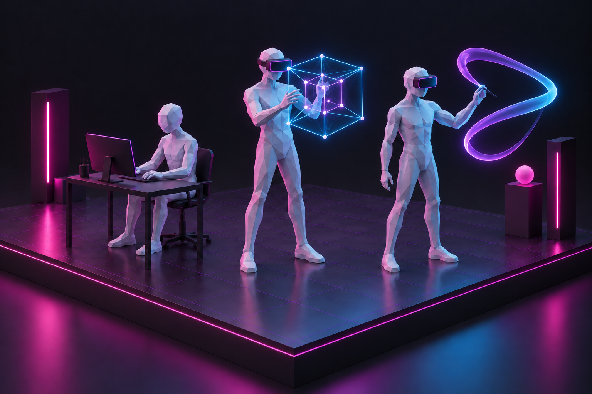
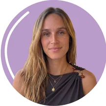
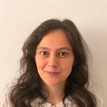

The Technical Axis
We revisit and redesign computer graphics techniques to meet the demanding requirements of XR, namely real-time performance and user experience quality.
Solving for X in eXtended Reality.
The xReality Group conducts research at the intersection of Computer Graphics and eXtended Reality (XR). The many realities within XR serve as an incredibly rich and stimulating mathematical wonderland filled with unique technical and design challenges. When solved, these challenges unlock deeply engaging and meaningful experiences.
Our research operates along two primary axes:
We revisit and redesign computer graphics techniques to meet the demanding requirements of XR, namely real-time performance and user experience quality.
We design and evaluate novel spatial interfaces and interaction techniques aimed at augmenting human perception and action in domains where immersive interaction offers a clear advantage over traditional computing.
Our research addresses both fundamental and applied challenges in XR. Currently, it includes work in real-time computer graphics, with a focus on collision detection and human motion processing, as well as a range of application domains where we investigate how XR can enhance the way people learn, train, analyze, create, and collaborate.
These domains include computational gastronomy, spatial content creation, medicine (orthopedic surgery, breast surgery, and dentistry), and education (for teaching, learning, and knowledge refresh).
We believe the computer graphics techniques and immersive prototypes developed within our lab will help shape the products and experiences adopted by millions of users in the years to come. By deeply engaging students in our research projects, we advance the state of the art in spatial computing and train the next generation of researchers, engineers, and XR innovators.
The xReality Group was founded in 2023 and is directed by Daniel Simões Lopes.
We envision a computing future liberated from the flat, 2D status quo that still confines us: a world where Real Reality is deeply entangled with Virtual Realities.
In this future, XR has transcended hype to become a widespread, viable tool of true utility, an essential everyday medium seamlessly integrated into the specific domains where it excels. Ultimately, it is a world where computing is freed into three-dimensional space, serving as an intuitive paradigm built entirely to augment and heighten human capabilities.
To unlock this future, we need to address its core technical and design challenges. We need to solve a lot of Xs in eXtended Reality.

Our lab actively bridges foundational computer graphics with human-centered design and open-source deployment, establishing the practical blueprint required to realize engaging, next-generation spatial experiences.
Advance the computer graphics techniques required to power efficient XR systems.
Reframe computer graphics as a foundational pillar of XR design where technique directly influences the quality of the spatial user experience.
Investigate, prototype, build, and evaluate immersive systems for fields where spatial computing provides definitive advantages, using user insight, behavior, and perception as the primary catalyst of the XR development loop.
Bridge XR research and real-world applications, collaborating with industries and communities to deploy XR in domains of true utility and prototyping the next generation of consumer and professional systems.
Democratize XR by openly sharing software materials and hardware blueprints, ensuring spatial computing remains universally accessible, effective, and meaningful.
Educate and mentor the next generations of students, researchers, engineers, and XR innovators, combining rigorous scientific training with advanced computer graphics to deliver the intuitive, high-impact spatial interfaces of tomorrow.
Current work ranges from real-time graphics problems to human-centered XR applications in food, spatial creation, medicine, and education.
Real-time collision detection between convex shapes for accurate and efficient spatial simulation.
Transforming human micro-movements into meaningful signals for spatial interaction and biosignal analysis.
Augmenting human experience and literacy around food through XR.
Designing spatial tools for more natural 3D modeling and prototyping.
Co-designing XR systems for medical education, training, diagnostics, and surgical support.
We share our research through peer-reviewed journal articles and conference papers, consistently backed by open-source code and video demonstrations.
For work related to the previous iteration of the x Reality Group (pre-2023), please visit Daniel Simões Lopes'
personal website. For the full list of publications, XR-related or otherwise, visit Daniel's Google Scholar profile.
Our group brings together the upcoming generation of computer scientists and engineers driven to push the boundaries of computer graphics and spatial computing.


Our research is made possible through national, European, and institutional funding.
For research conversations, student inquiries, collaborations, or applied XR projects, contact Daniel Simões Lopes or visit the lab at the Interactive Technologies Institute.
daniel.s.lopes@tecnico.ulisboa.pt
Interactive Technologies Institute
TTC@ULisboa
Av. Prof. Gama Pinto 2
1649-003 Lisboa
Departamento de Engenharia Informática
Instituto Superior Técnico
Universidade de Lisboa
Av. Rovisco Pais 1
1049-001 Lisboa, Portugal